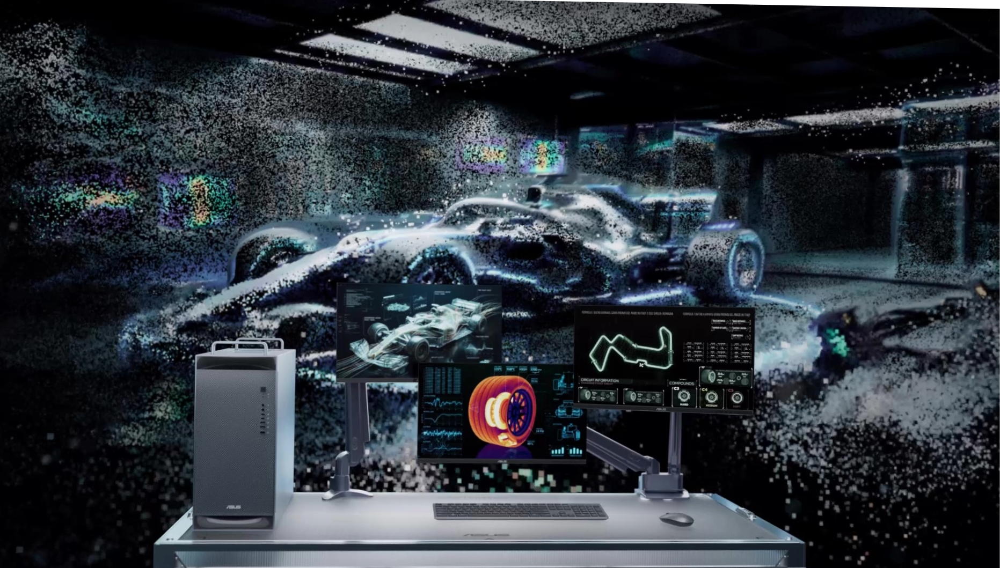
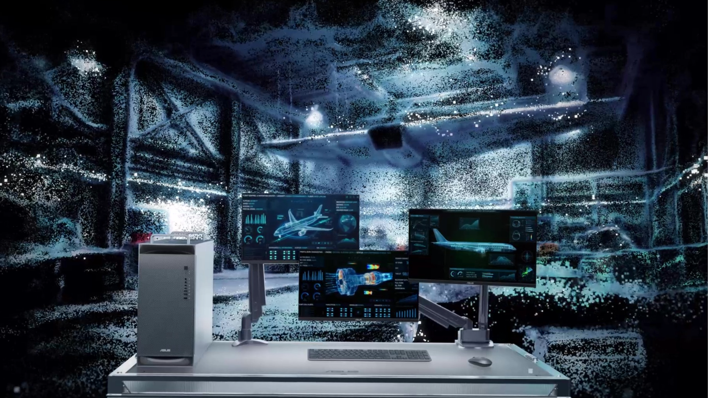
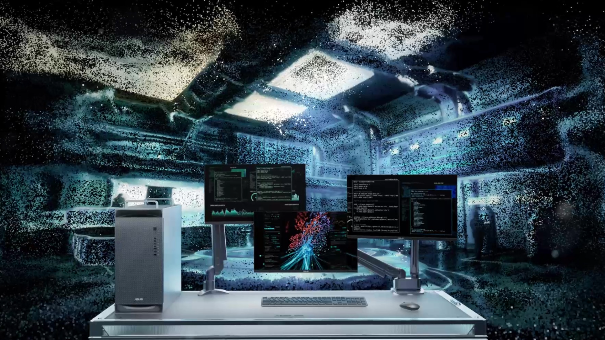
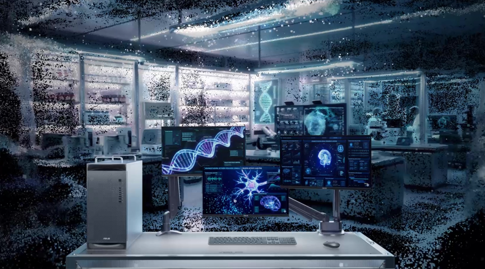
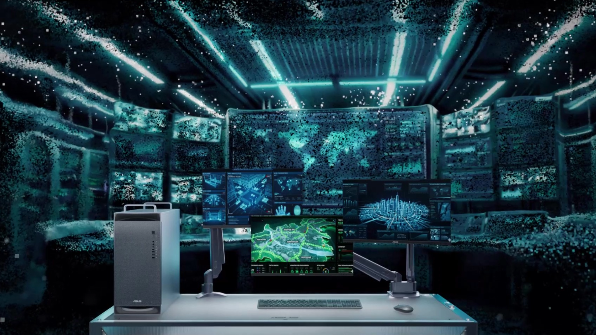
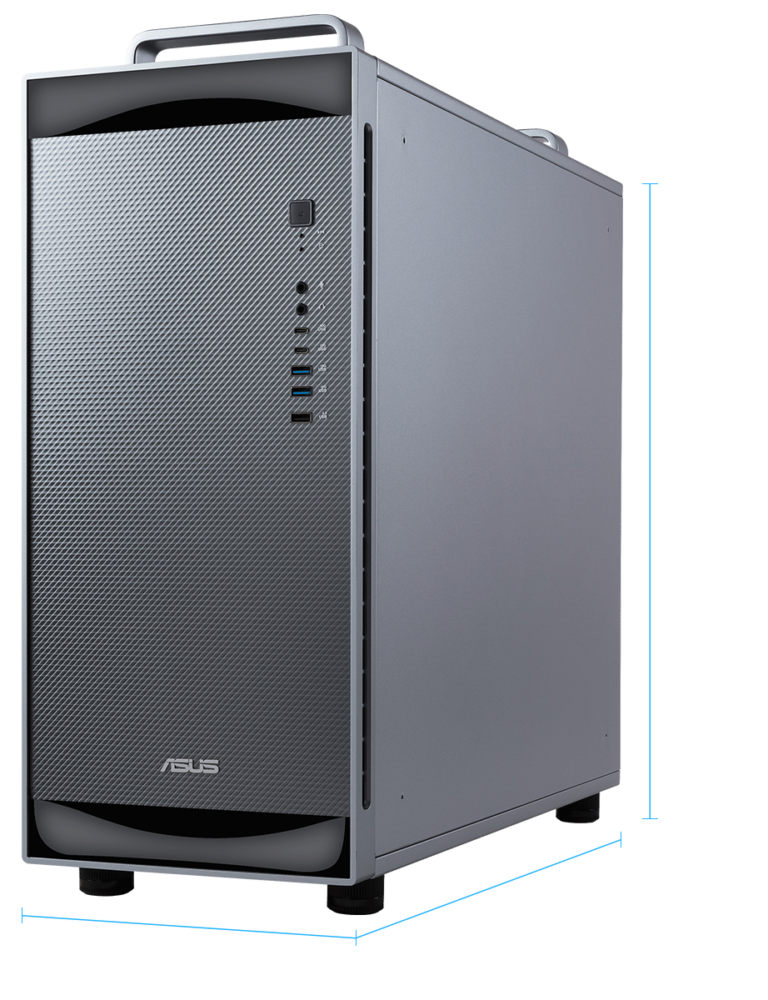

Get Started
Register your interest to receive pre-sales consultation and personalized product information from ASUS specialists.
Request to Be ContactedSpecifications and product images may vary depending on configuration and options.
The ASUS ExpertCenter Pro ET900N G3 is part of a new class of deskside AI supercomputers. Designed from the ground up to build and run AI, this revolutionary system unleashes the NVIDIA® GB300 Grace Blackwell Ultra Desktop Superchip and up to a massive 748GB of large coherent memory. Fully compatible with NVIDIA OpenShell and NVIDIA AI Enterprise, it enables the local deployment of trillion-parameter models and autonomous AI agents at the deskside. Capable of developing and running large-scale AI training and inferencing workloads, this desktop system uses the NVIDIA® AI Software Stack to put an unprecedented amount of compute performance at the fingertips of AI development teams.
Specifications and product images may vary depending on configuration and options.
NVIDIA® GB300 Grace Blackwell Ultra Desktop Superchip
Up to
748 GB
of Coherent Memory
Up to
20 PFLOPS
AI Performance
NVIDIA ConnectX®-8 SuperNIC
Significantly enhances system performance for AI factories.
NVIDIA
NVLink™-C2C
Enables high-bandwidth, coherent data transfer between processors and accelerators.
Support NVIDIA® NemoClaw
For secure, streamlined AI agent workflows.
NVIDIA AI Software Stack
Empowers developers to create and execute AI workflows.
NVIDIA Multi-Instance GPU (MIG)
MIG partitions GPUs into up to seven isolated instances, enabling secure, efficient, and flexible usage.
*Preliminary specifications, subject to change.
Applications





Agentic AI
The ASUS ExpertCenter Pro ET900N G3 with the NVIDIA NemoClaw open source stack, adds privacy and security controls to OpenClaw. NemoClaw installs NVIDIA OpenShell to enforce policy-based privacy and security guardrails, giving users control over how agents behave and handle data and provides the compute resources to run open models like NVIDIA Nemotron locally for enhanced privacy and cost efficiency.
View On GitHub Try It NowThermal
Features a data center-grade thermal architecture designed to sustain extreme AI workloads without compromise. With optimized airflow, advanced heat dissipation, and precision thermal control, it efficiently supports next-generation deskside supercomputer performance for AI training and inference. This enables long-duration, full-load local AI computing with zero thermal throttling, consistent peak performance, and 24/7 reliability for mission-critical workloads.
Features
Features an NVIDIA Blackwell Ultra GPU, which comes with the latest-generation NVIDIA CUDA® cores and fifth-generation Tensor Cores, connected to a high-performance NVIDIA Grace CPU via the NVIDIA® NVLink®-C2C interconnect, delivering best-in-class system communication and performance.
Powered by the latest NVIDIA Blackwell Generation Tensor Cores, enabling 4-bit floating point (FP4) AI. FP4 increases the performance and size of next-generation models that memory can support while maintaining high accuracy.
The NVIDIA ConnectX®-8 SuperNIC is optimized to supercharge hyperscale AI computing workloads. With up to 800 gigabits per second (Gb/s), NVIDIA ConnectX®-8 SuperNIC delivers extremely fast, efficient network connectivity, significantly enhancing system performance for AI factories.
NVIDIA DGX OS implements stable, fully qualified operating systems for running AI, machine learning, and analytics applications on the NVIDIA DGX platform. It includes system-specific configurations, drivers, and diagnostic and monitoring tools. Easily scale across multiple NVIDIA DGX Station systems, NVIDIA DGX Cloud, or other accelerated data center or cloud infrastructure.
NVIDIA NVLink-C2C extends the industry-leading NVLink technology to a chip-to-chip interconnect between the GPU and CPU, enabling high-bandwidth coherent data transfers between processors and accelerators.
AI models continue to grow in scale and complexity. Training and running these models within NVIDIA Grace Blackwell Ultra’s large coherent memory allows for massive-scale models to be trained and run efficiently within one memory pool, thanks to the C2C superchip interconnect that bypasses the bottlenecks of traditional CPU and GPU systems.
A full stack solution for AI workloads including fine-tuning, inference, and data science. NVIDIA’s AI software stack lets you work local and easily deploy to cloud or data center using the same tools, libraries, frameworks and pretrained models from desktop to cloud.
NVIDIA DGX Stations take advantage of AI-based system optimizations that intelligently shift power based on the currently active workload, continually maximizing performance and efficiency.

DGX Station supports NVIDIA Multi-Instance GPU (MIG) technology to partition the GPU into as many as seven instances for local development with multiple users, each fully isolated with its own high-bandwidth memory, cache, and compute cores.
Connectivity

565 mm
584 mm
232 mm
| Feature | Description |
|---|---|
| Model | ASUS ExpertCenter Pro ET900N G3 |
| CPU | Grace-72 Core Neoverse V2 |
| Graphics | NVIDIA Blackwell Ultra |
| Memory | 748GB of Coherent Memory |
| Storage | Up to 4 x M.2 2280 NVMe PCIe 5.0 SSD, total 8TB |
| Operating System / Software | Linux Support / NVIDIA AI Software Stack |